Hardware e Software
Técnico em Meio Ambiente · 1º Módulo · 2026/2
Prof. Diego Cordeiro de Oliveira
Instituto Federal do Piauí
Promover uma educação de excelência, direcionada às demandas sociais.
O que vamos explorar hoje?
1. O computador como sistema
Entenderemos como entrada, processamento, armazenamento e saída trabalham juntos em qualquer máquina digital.
2. Hardware: componentes internos
Conheceremos a placa-mãe, a CPU, as memórias e os dispositivos de armazenamento.
3. Hardware: periféricos e conexões
Diferenciaremos os dispositivos de entrada, de saída e os híbridos, além das principais portas e cabos.
4. Software: o que dá vida à máquina
Veremos os tipos de software — básico, utilitário e aplicativo — e o papel dos sistemas operacionais.
Hardware × Software
Hardware — a parte física
- Todo componente que se pode tocar: circuitos, placas, cabos e periféricos.
- Reúne a placa-mãe, a CPU, as memórias, os discos dentre outros.
- É o que ocupa espaço, consome energia e se desgasta com o tempo.
Software — a parte lógica
- Conjunto de programas e instruções que dizem ao hardware o que fazer.
- Inclui o sistema operacional, os aplicativos e os utilitários.
- Não se toca: é informação, que pode ser copiada e atualizada em segundos.
Hardware sem software é um conjunto de peças paradas; software sem hardware não tem onde rodar. A máquina só se torna útil quando os dois trabalham juntos, como um instrumento musical e a música que ele executa.
O computador como sistema
Do celular ao supercomputador, toda máquina digital repete o mesmo ciclo de quatro etapas:
- Entrada: os dados e os comandos chegam ao sistema por meio do teclado, mouse, microfone, câmera, sensores e leitores de código.
- Processamento: a CPU interpreta as instruções e transforma os dados, fazendo cálculos, comparações e decisões.
- Armazenamento: o resultado é guardado de forma temporária ou permanente na memória RAM, SSD, HD ou nuvem.
- Saída: o resultado volta para quem usa o sistema por meio da tela, impressora, som, plotter e relatórios.
Aplicação na área ambiental
Uma estação de monitoramento segue exatamente essa lógica: o sensor mede a qualidade da água (entrada), o programa compara o valor com os limites da legislação (processamento), registra o histórico (armazenamento) e emite o alerta ou o relatório (saída).
Como as partes conversam: a máquina de von Neumann
| Bloco | Função | Exemplos |
|---|---|---|
| Unidade Central de Processamento (CPU) | Executa as instruções e coordena todo o sistema, com a ULA, a unidade de controle e os registradores. | Intel Core, AMD Ryzen, Apple M, ARM |
| Memória principal | Guarda, durante a execução, os programas e os dados que estão em uso. | Memória RAM e cache |
| Dispositivos de entrada e saída (E/S) | Levam dados para dentro do sistema e devolvem os resultados para fora. | Teclado, tela, sensores, impressora |
| Barramentos | Caminhos por onde os dados, os endereços e os sinais de controle circulam entre os blocos. | Barramento de dados, de endereços e de controle |
Programa armazenado
A grande ideia do modelo de John von Neumann (1945) é que dados e instruções ficam na mesma memória. Isso permite mudar o comportamento da máquina apenas trocando o programa, sem mexer no hardware, a base de todos os computadores atuais.
John von Neumann foi um brilhante matemático, físico e cientista da computação húngaro-americano (1903–1957), considerado uma das maiores e mais versáteis mentes do século XX.
A placa-mãe: onde tudo se conecta
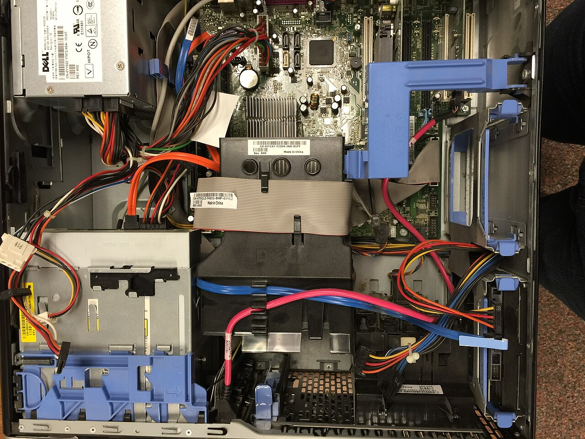
- A base de todo o hardware: é a placa que interliga os componentes como processador, pentes de memória, discos e placas de expansão.
- Chipset e circuitos: gerenciam a comunicação entre CPU, memória e periféricos, além de controlar energia e temperatura.
- Slots e portas: os slots recebem placas de vídeo, som e rede; as portas (USB, HDMI, rede) levam o computador ao mundo externo.
Por que isso importa
É a placa-mãe que define o que pode ser melhorado em um computador: quantidade de memória, tipo de processador e modelos de disco aceitos.
CPU: o cérebro do computador
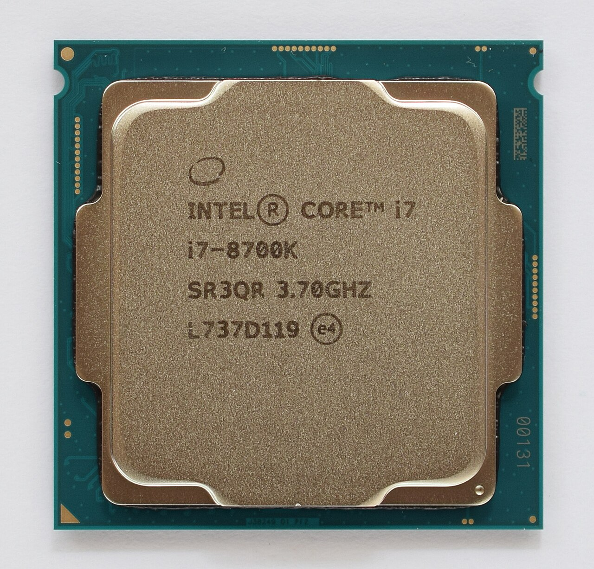
- ULA: a Unidade Lógica e Aritmética faz os cálculos e as comparações que produzem os resultados.
- Unidade de controle: busca, interpreta e coordena a execução das instruções e comanda a memória e os dispositivos de E/S.
- Registradores e cache: memórias ultrarrápidas dentro do processador, onde os dados ficam durante a execução.
- Clock e núcleos: o clock (GHz) marca o ritmo, mais núcleos significam mais tarefas ao mesmo tempo e a arquitetura de 32 ou 64 bits define quanto dado ele manipula por vez.
Do 4004 até hoje
O primeiro microprocessador comercial (Intel 4004, 1971) tinha 2.300 transistores e trabalhava a 740 kHz; os processadores atuais reúnem bilhões de transistores e executam bilhões de ciclos por segundo.
Memórias: onde a informação fica durante o uso
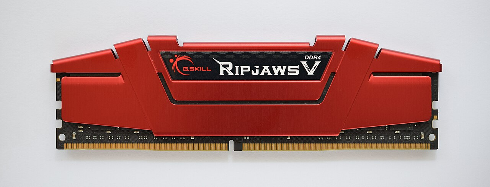
- Cache — a mais rápida: guarda os dados usados com frequência bem perto da CPU; tem poucos megabytes, mas responde em poucos ciclos.
- RAM — a memória de trabalho: guarda os programas abertos e os dados em uso. É volátil: ao desligar, tudo se apaga, por isso o trabalho precisa ser salvo.
- ROM — a memória de leitura: traz as instruções gravadas de fábrica que inicializam o computador (BIOS/UEFI). É não volátil: mantém o conteúdo sem energia.
Pense na mesa e no armário
A RAM é a mesa de trabalho: só cabe o que está sendo usado agora, e no fim do dia ela é limpa. O armazenamento é o armário: guarda tudo, mas leva mais tempo para abrir e fechar.
Armazenamento: guardar para não perder
| Meio | Como funciona | Velocidade e capacidade típicas |
|---|---|---|
| HD (disco rígido) | Discos magnéticos girando, com uma cabeça que grava e lê os dados. | Mais lento e mais barato por GB — de 500 GB a 4 TB |
| SSD | Memória flash, sem partes móveis: silencioso, resistente a quedas e muito mais rápido. | De 240 GB a 2 TB; ideal para o sistema operacional |
| Pendrive e cartão | Flash removível, ligada por USB ou por leitor de cartões. | Portátil; ótimo para transportar e entregar trabalhos |
| Nuvem | Arquivos guardados em servidores acessados pela internet, com cópia de segurança. | Espaço conforme o plano; acesso de qualquer lugar |
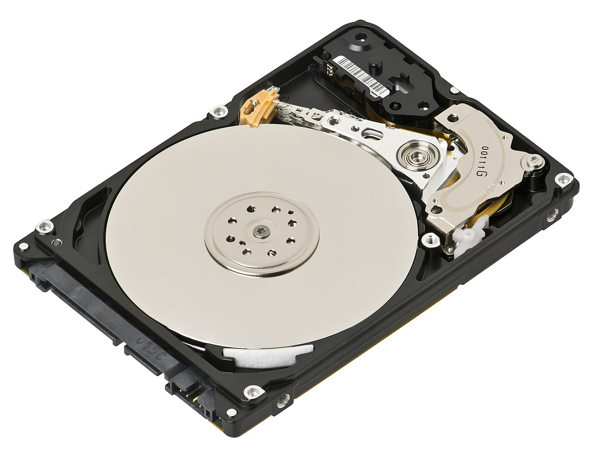
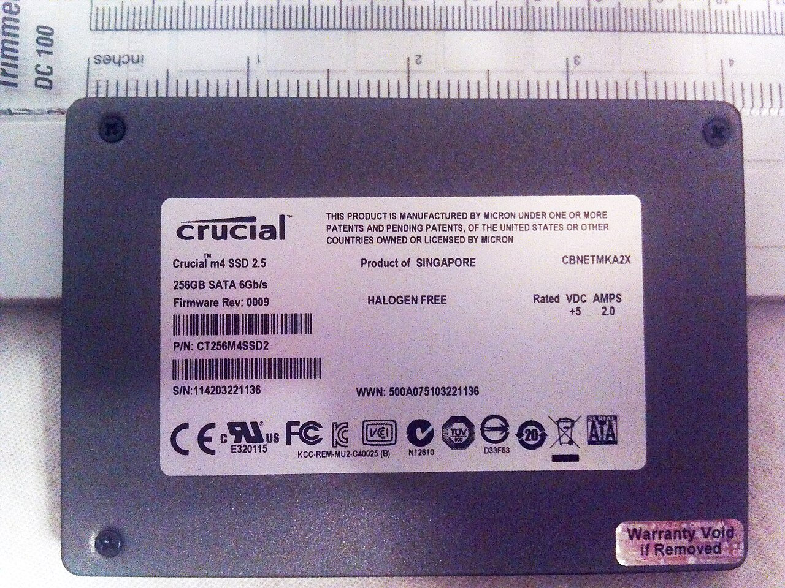
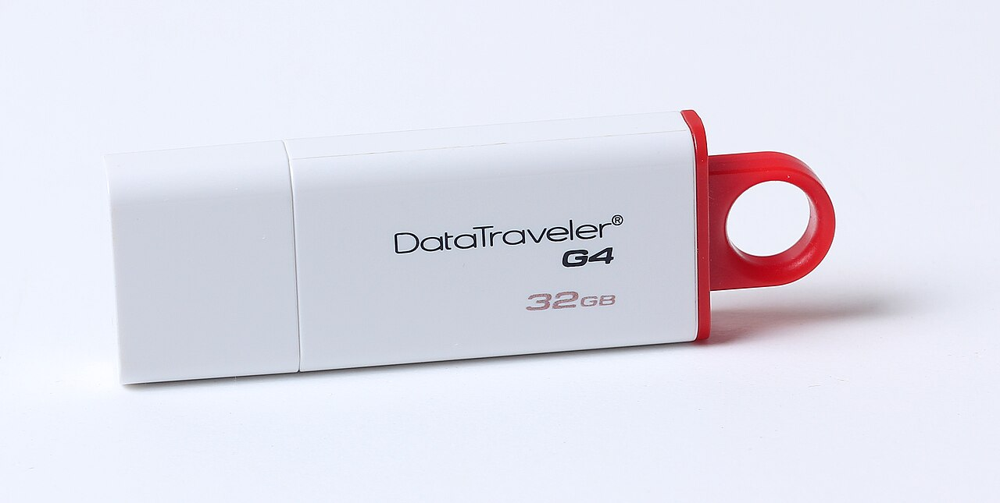
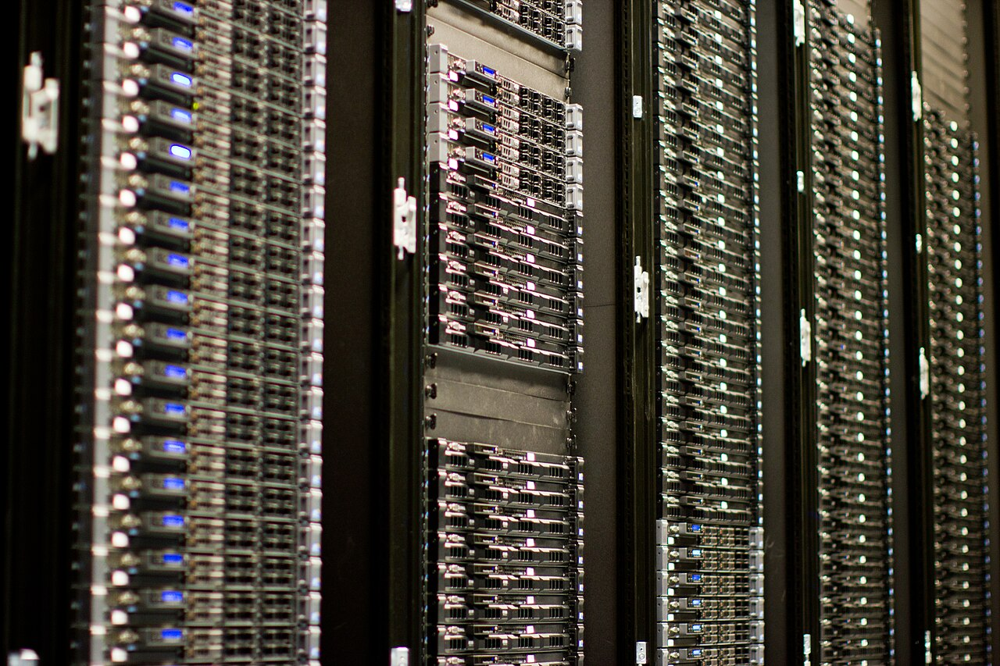
Periféricos de entrada: os dados chegam ao sistema
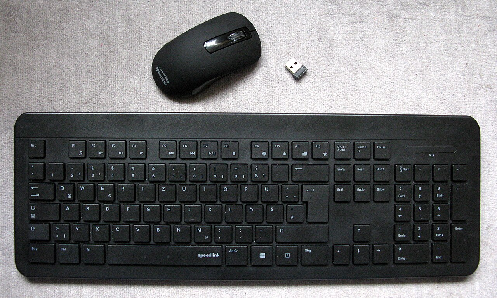
- Entrada de texto e comandos: teclado, mouse, touchpad e caneta digital traduzem as decisões do usuário em sinais que o computador entende.
- Captura de imagem e som: webcam, câmera digital, scanner e microfone convertem imagens, documentos e voz em arquivos digitais.
- Leitura de códigos e sensores: leitores de código de barras, GPS e sensores de temperatura, umidade e pH trazem os dados de campo para o computador.
Regra prática
Se o dispositivo traz informação para dentro do computador, é de entrada. Se ele devolve informação para você, é de saída. Alguns fazem as duas coisas, são os híbridos.
Periféricos de saída: o resultado volta até você
Depois do processamento, os dispositivos de saída transformam o resultado em algo que podemos ver, ouvir ou levar para o papel: monitores e projetores, impressoras, plotters, caixas de som e fones.
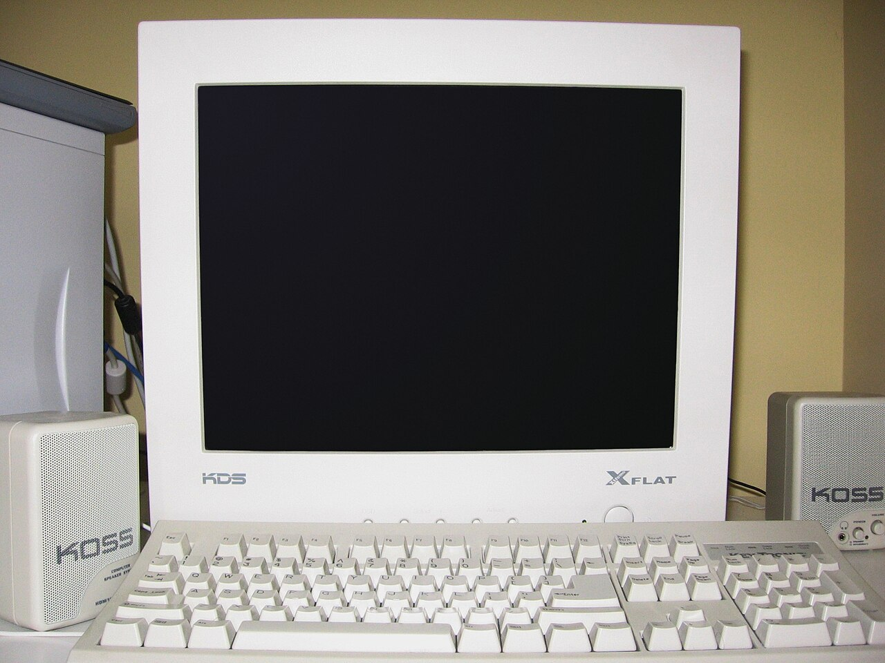
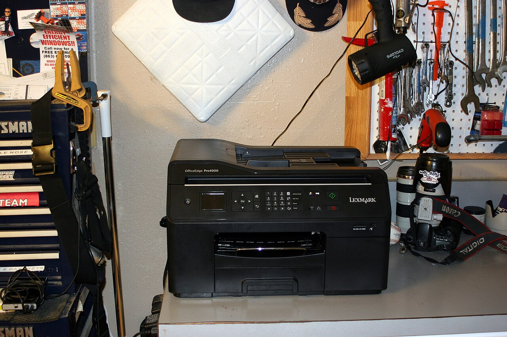
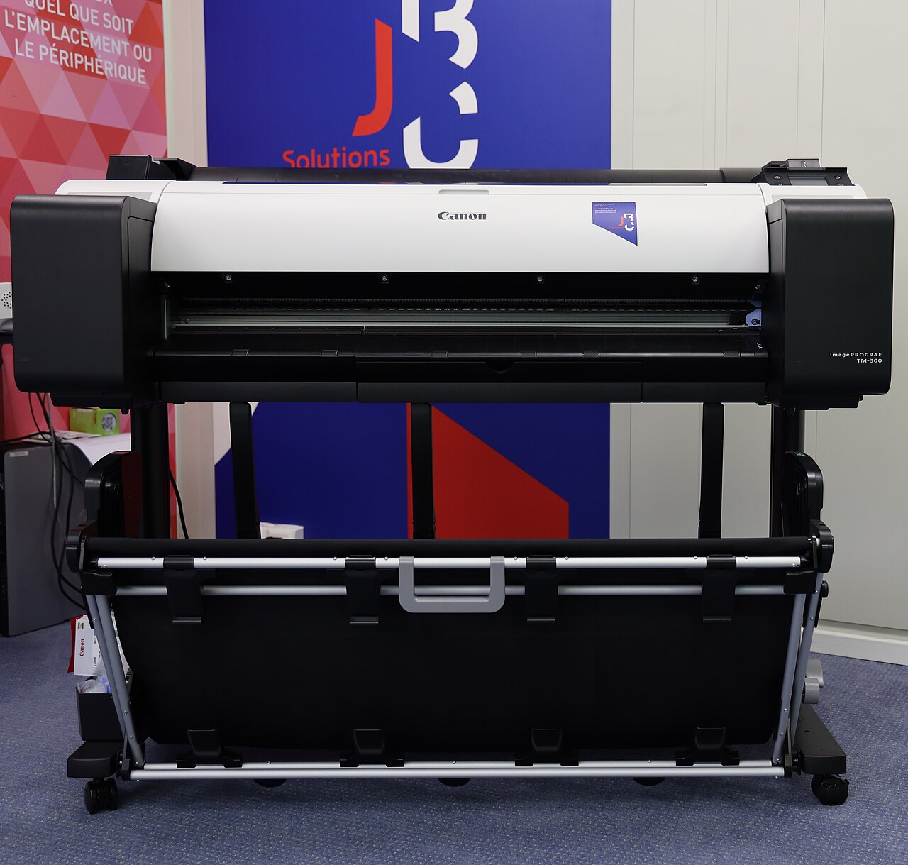
Aplicação na área ambiental
Um plotter imprime mapas de uso do solo, plantas de recuperação e cartas temáticas em tamanho de leitura, material essencial em relatórios de licenciamento e em apresentações para a comunidade.
Dispositivos híbridos e formas de conexão
Alguns dispositivos fazem entrada e saída ao mesmo tempo.
| Dispositivo, porta ou tecnologia | Tipo | Para que serve |
|---|---|---|
| Tela sensível ao toque | Entrada e saída | Recebe o toque e mostra a resposta na mesma superfície. |
| Modem e roteador | Entrada e saída | Trazem os dados da internet e enviam os pedidos de volta à rede. |
| Pendrive e HD externo | Entrada e saída | Gravam e devolvem arquivos sempre que são conectados. |
| Portas USB, HDMI e de rede | Conexão com fio | Ligam periféricos, monitores e cabos de rede ao computador. |
| Wi-Fi e Bluetooth | Conexão sem fio | Conectam teclados, mouses, fones e a internet sem cabos. |
O padrão que unificou tudo
Antes, cada periférico tinha um conector próprio. Com o USB, teclado, mouse, pendrive, impressora e celular passaram a usar o mesmo tipo de porta e o computador reconhece cada dispositivo assim que ele é ligado.
Software: como se classificam os programas
| Tipo | O que faz | Exemplos |
|---|---|---|
| Software básico (de sistema) | Faz a máquina funcionar e serve de base para todos os demais programas. | Windows, Linux, macOS, Android, iOS |
| Software utilitário | Ferramentas que mantêm, protegem e otimizam o computador. | Antivírus, backup, compactadores, limpeza de disco, gerenciadores de arquivos |
| Software aplicativo | Resolve as tarefas do usuário: escrever, calcular, apresentar, comunicar e analisar. | Editores de texto, planilhas, navegadores, SIG, programas de estatística |
| Firmware | Instruções gravadas no próprio hardware, entre o software e o circuito. | BIOS/UEFI, firmware de roteadores, impressoras e celulares |
As fronteiras se misturam
A classificação ajuda a organizar o estudo, mas na prática os tipos se combinam: muitos sistemas operacionais já trazem navegador, antivírus e até aplicativos de escritório embutidos.
Sistemas operacionais: o software que comanda o hardware
O que o sistema operacional faz
- Gerencia o hardware: processador, memória, discos e periféricos.
- Executa e organiza os programas e seus processos.
- Controla arquivos, pastas e permissões de acesso.
- Oferece a interface de uso e cuida de atualizações e segurança.
Onde eles estão
- Computadores: Windows, Linux (Ubuntu, Debian, Fedora) e macOS.
- Celulares e tablets: Android e iOS.
- Servidores: Linux (Red Hat, Debian) e Windows Server.
- Equipamentos embarcados: Linux, Android e sistemas de tempo real em sensores e drones.
Aplicativos e utilitários no dia a dia
Escritório
Editor de texto, planilha e slides para documentos e cálculos.

Internet e comunicação
Navegadores, e-mail e videoconferência para estudar e trabalhar em equipe.

Segurança e manutenção
Antivírus, backup e compactadores para proteger e otimizar.

Ambientais
QGIS, imagens de satélite e GPS no monitoramento.

Atenção ao licenciamento
Programas proprietários exigem licença; os de código aberto seguem a licença do autor.
Hardware e software no monitoramento ambiental
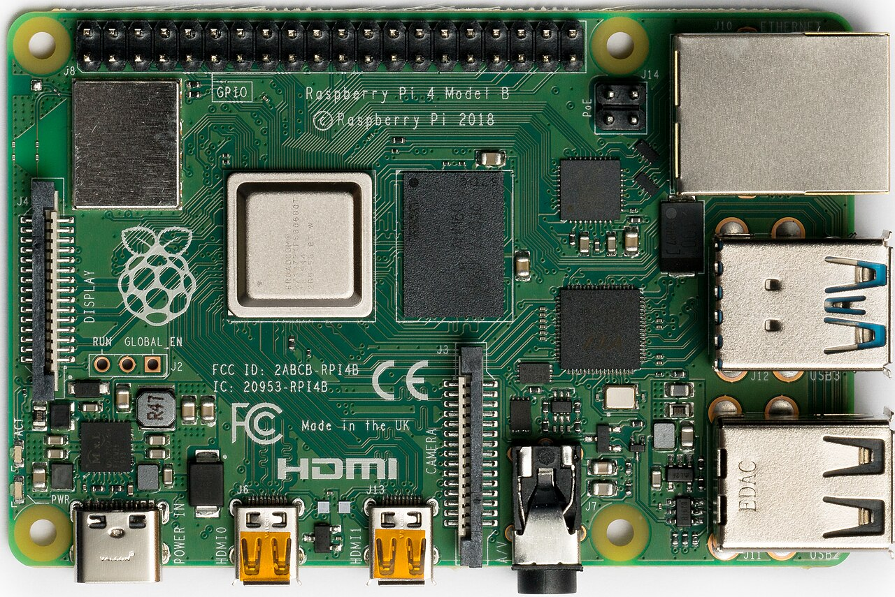
- Sensores e placas embarcadas: placas como Arduino e Raspberry Pi leem sensores de temperatura, umidade, pH e turbidez — hardware barato que funciona em campo.
- Estações e registro de dados: o software grava séries históricas, gera gráficos e envia os dados por rede ou telefonia para a equipe técnica.
- Drones, GPS e imagens de satélite: permitem mapear áreas de difícil acesso, acompanhar o avanço do desmatamento e comparar imagens ao longo do tempo.
Uma dupla em campo
O sensor coleta o dado, o programa interpreta e compara com as metas, e o resultado vira decisão ambiental: um alerta de contaminação, um relatório ou um mapa. Sem um dos dois, hardware ou software nada acontece.
Desafio rápido: hardware ou software?
Pense antes de clicar: toque em cada pergunta para revelar a resposta.
Atividade da semana
Liste 5 dispositivos, classifique cada um em entrada, saída ou híbrido e indique o software usado com ele. Traga na próxima aula.
Dúvidas?
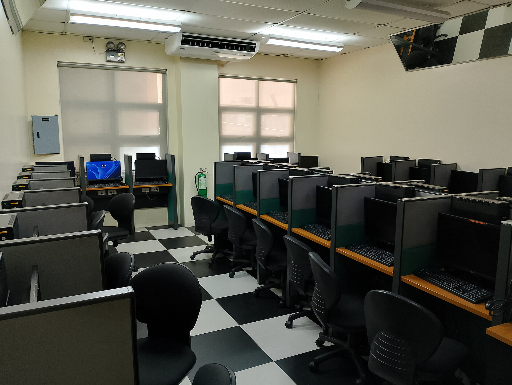
Dúvidas?
Estamos aqui para responder.
Prof. Diego Cordeiro de Oliveira — diego.cordeiro@ifpi.edu.br